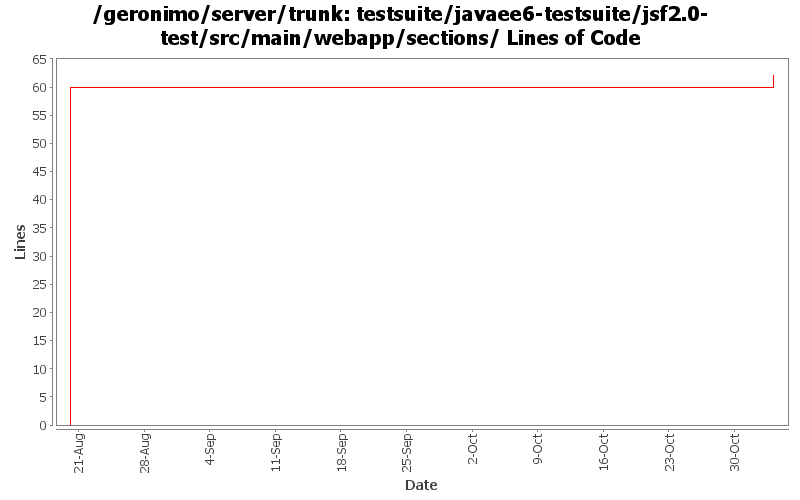

[root]/testsuite/javaee6-testsuite/jsf2.0-test/src/main/webapp/sections

| Author | Changes | Lines of Code | Lines per Change |
|---|---|---|---|
| Totals | 2 (100.0%) | 64 (100.0%) | 32.0 |
| xiaming | 1 (50.0%) | 60 (93.8%) | 60.0 |
| xuhaihong | 1 (50.0%) | 4 (6.3%) | 4.0 |
1. Use fixed id for using selenium easily
2. Wrap the commandButtion with form element
4 lines of code changed in 1 file:
GERONIMO-5528 add test case to verify simple jsf 2.0 new features: facelet and ajax support, provided by Zhen Zhang
60 lines of code changed in 1 file: